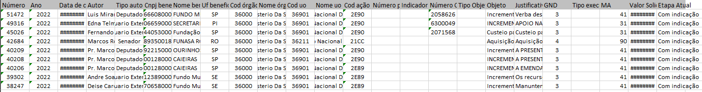

No mês de fevereiro, nossa equipe se envolveu em muitas conversas, tomadas de decisões e enfrentou diversas dúvidas. A ideia de criar um site de transparência estava estabelecida, porém, surgiram questionamentos sobre como realizaríamos e executaríamos todos os diagramas e protótipos necessários.
Inicialmente, devido à falta de definição, dividimos o grupo em áreas de acordo com as afinidades individuais, como Back-end, Front-end, Filtragem dos dados e Documentação. No entanto, deixamos claro que, se algum membro enfrentasse dificuldades, seria encorajado a comunicar ao grupo, a fim de possibilitar a tomada de decisões conjuntas e ajustar as responsabilidades conforme necessário.
O primeiro problema encontrado foi: como importar os dados da câmara dos deputados e inserir no banco de dados? Sendo que os dados são disponibilizados de forma desorganizada e o banco não aceita certos padrões.
Abaixo, há uma figura exemplificando como os dados estão disponibilizados:
Os dados estão disponíveis em: Ementas